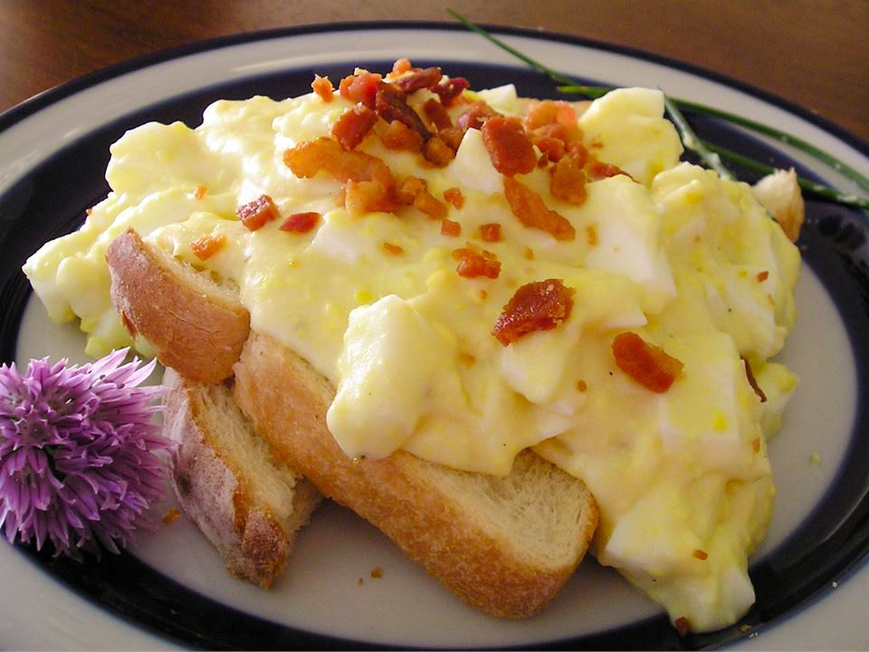

Creamed Eggs Recipe
Home

Delicious served on toast for breakfast the day after Easter because it uses up some of your leftover eggs!
Ingredients
- 6 large eggs
- 2 tablespoons butter
- 2 tablespoons all-purpose flour
- 2 cups milk
- ⅛ teaspoon ground white pepper (Optional)
- salt and freshly ground black pepper to taste
Steps
- Gather the ingredients.
- Place eggs in a saucepan and cover with cold water. Bring water to a boil and immediately remove from heat. Cover and let eggs stand in hot water for 10 to 12 minutes. Remove from hot water, cool, peel and chop.
- Melt butter in a saucepan over medium heat; stir in flour until smooth. Gradually mix in milk so that no lumps form and stir constantly until mixture comes to a boil.
- Stir white pepper, salt, black pepper, and chopped eggs into the sauce; stir until eggs are heated through.